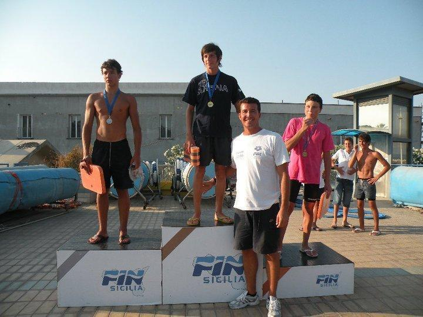
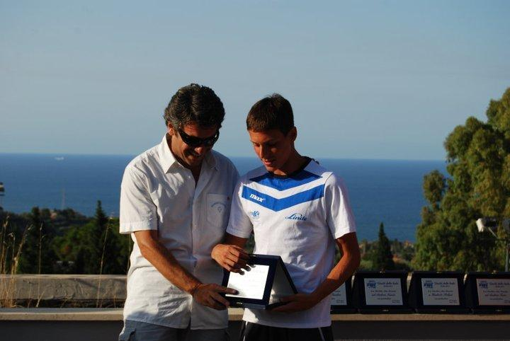
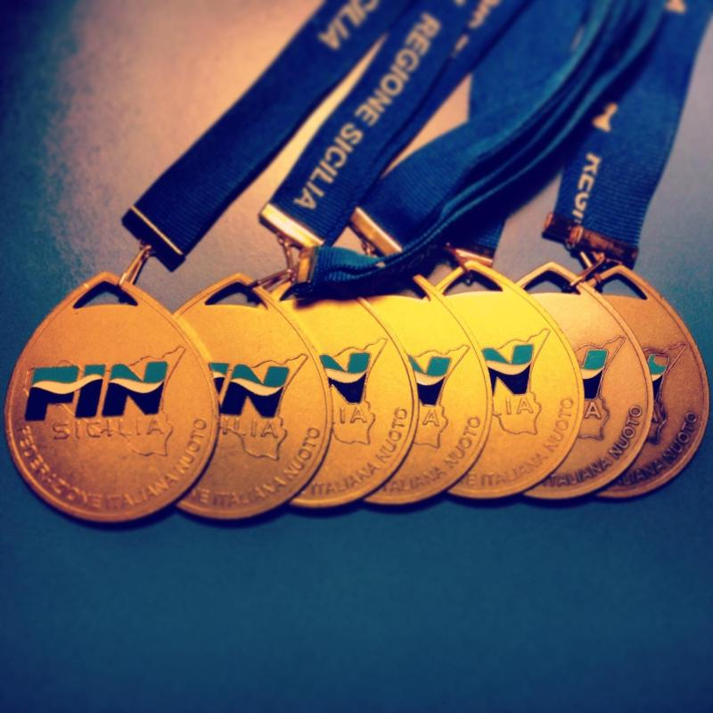

My first victory in the regional championships.

The recognition for my participation and results achieved at the Jeux des îles (International swimming competition under 16) where I got two gold medals (50m and 100m breaststroke), one silver medal (4x100 medley relay), and one bronze medal (200m breaststroke).

These are the medals I won in a single regional championship. It was one of my best regional championship I did where I also got two regional records in the 100m and 200m breaststroke.
